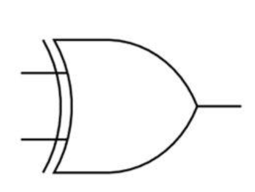
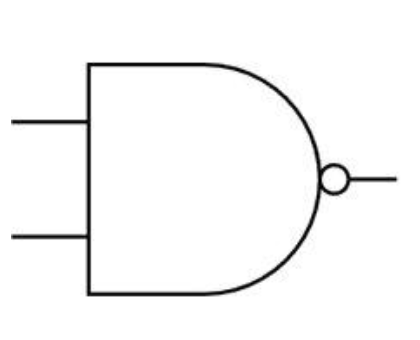
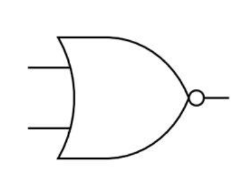
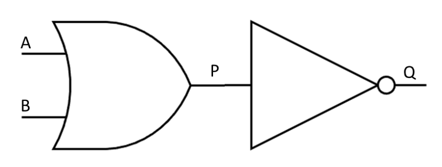
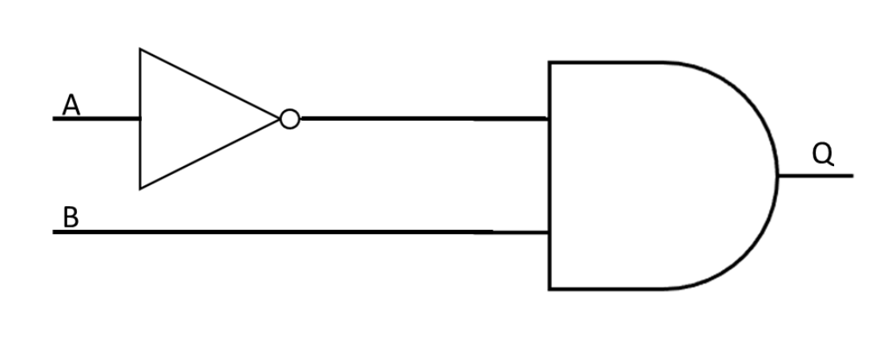
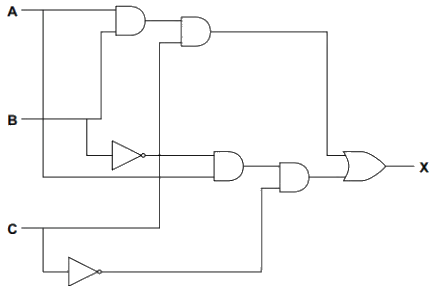
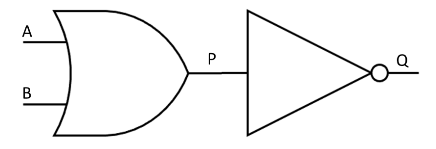
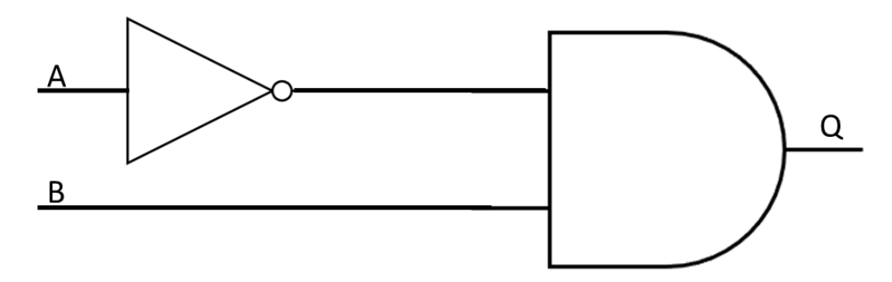
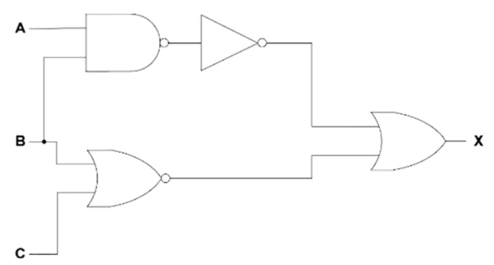
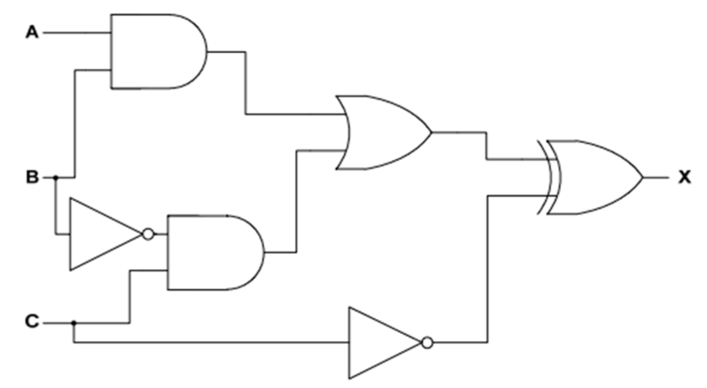

Logic Gates
What is Boolean logic?
Cambridge IGCSE 0478 expects you to identify logic gates, write Boolean expressions, and interpret simple logic circuits. This page covers exactly the gates and formats examiners use—nothing more, nothing less.
- Boolean logic is used in computer science and electronics to make logical decisions
- Boolean operators are either TRUE or FALSE, often represented as 1 or 0
- Inputs and outputs are given letters to represent them
- To define Boolean logic we use special symbols to make writing expressions much easier
What are logic gates?
- Logic gates are a visual way of representing a Boolean expression
- The logic gates covered in this course are:
- AND
- OR
- NOT
- XOR
- NAND
- NOR
AND
| Expression operator | Circuit symbol | Explanation |
|---|---|---|
| (A AND B) | Returns TRUE only if both inputs are TRUE TRUE AND TRUE = TRUE Otherwise = FALSE |
OR
| Expression operator | Circuit symbol | Explanation |
|---|---|---|
| (A OR B) | Returns TRUE if either input is TRUE TRUE OR FALSE = TRUE FALSE OR FALSE = FALSE |
NOT
| Expression operator | Circuit symbol | Explanation |
|---|---|---|
| (NOT A) | Reverses the input value NOT TRUE = FALSE NOT FALSE = TRUE |
XOR (exclusive OR)
| Expression operator | Circuit symbol | Explanation |
|---|---|---|
| (A XOR B) |  |
Returns TRUE if either input is TRUE but NOT both TRUE OR FALSE = TRUE FALSE OR FALSE = FALSE TRUE OR TRUE = FALSE |
The most common exam mistake is confusing OR and XOR. Remember: XOR is only true if exactly one input is true*. It’s false if both are true or both are false.* |
NAND (not and)
| Expression operator | Circuit symbol | Explanation |
|---|---|---|
| (A NAND B) |  |
Returns TRUE if either or both inputs are FALSE TRUE OR FALSE = TRUE FALSE OR FALSE = TRUE TRUE OR TRUE = FALSE |
NOR (not OR)
| Expression operator | Circuit symbol | Explanation |
|---|---|---|
| (A NOR B) |  |
Returns TRUE if both inputs are FALSE TRUE OR FALSE = FALSE FALSE OR FALSE = TRUE TRUE OR TRUE = FALSE |
| “Draw the logic circuit for the expression (A AND B) OR (NOT C)” | ||
| Tip: Draw from left to right, and label all inputs clearly. Mislabelled inputs = lost marks |
Logic Circuits
What is a logic circuit?
- A logic circuit performs logical operations on binary information
- Logic gates are core components of logic circuits
- Based on the arrangement of logic gates and the input signals, the circuit performs a specific function
- A logic diagram is a visual representation of a combinations of logic gates within a logic circuit
- Brackets are used to clarify the order of operations
- An example logic diagram for the Boolean expression Q = NOT(A OR B) would be:

- In the logic diagram above, the inputs are represented by A and B
- P is the output of the OR gate on the left and becomes the input of the NOT gate
- Q is the final output of the logic circuit
You may be asked to draw a logic circuit from a logic statement or a Boolean expression OR write the logical expression that is expressed in the logic diagram using Boolean expression operators
Logic circuits will be limited to a maximum of three inputs and one output
Example of combining logic gates
- P = (A OR B) AND NOT C
A sprinkler system switches on if it is not daytime (input A) and the temperature is greater than 40 (input B)
Draw a logic circuit to represent the problem statement above
[2]

Truth Tables
What is a truth table?
- A truth table is a tool used in logic and computer science to visualise the results of Boolean expressions
- They represent all possible inputs and the associated outputs for a given Boolean expression
AND
Circuit symbol | Truth Table | |||||||||||||||
|---|---|---|---|---|---|---|---|---|---|---|---|---|---|---|---|---|
|  |
|
OR
Circuit symbol | Truth Table | |||||||||||||||
|---|---|---|---|---|---|---|---|---|---|---|---|---|---|---|---|---|
|  |
|
NOT
Circuit symbol | Truth Table | ||||||
|---|---|---|---|---|---|---|---|
|  |
|
XOR (exclusive)
Circuit symbol | Truth Table | |||||||||||||||
|---|---|---|---|---|---|---|---|---|---|---|---|---|---|---|---|---|
|  |
|
NAND (not and)
Circuit symbol | Truth Table | |||||||||||||||
|---|---|---|---|---|---|---|---|---|---|---|---|---|---|---|---|---|
|  |
|
NOR (not or)
Circuit symbol | Truth Table | |||||||||||||||
|---|---|---|---|---|---|---|---|---|---|---|---|---|---|---|---|---|
|  |
|
Truth Tables for Logic Circuits
How do you create truth tables for logic circuits?
- To create a truth table for the expression P = (A AND B) AND NOT C
- Calculate the numbers of rows needed (2 number of inputs)
- In this example there are 3 inputs (A, B, C) so a total of 8 rows are needed (2 3)
- To not miss any combination of inputs, start with 000 and count up in 3-bit binary (0-7)
A | B | C |
|---|---|---|
0 | 0 | 0 |
0 | 0 | 1 |
0 | 1 | 0 |
0 | 1 | 1 |
1 | 0 | 0 |
1 | 0 | 1 |
1 | 1 | 0 |
1 | 1 | 1 |
- Add a new column to show the results of the brackets first (A AND B)
A | B | C | A AND B |
|---|---|---|---|
0 | 0 | 0 | 0 |
0 | 0 | 1 | 0 |
0 | 1 | 0 | 0 |
0 | 1 | 1 | 0 |
1 | 0 | 0 | 0 |
1 | 0 | 1 | 0 |
1 | 1 | 0 | 1 |
1 | 1 | 1 | 1 |
- Add a new column to show the results of NOT C
A | B | C | A AND B | NOT C |
|---|---|---|---|---|
0 | 0 | 0 | 0 | 1 |
0 | 0 | 1 | 0 | 0 |
0 | 1 | 0 | 0 | 1 |
0 | 1 | 1 | 0 | 0 |
1 | 0 | 0 | 0 | 1 |
1 | 0 | 1 | 0 | 0 |
1 | 1 | 0 | 1 | 1 |
1 | 1 | 1 | 1 | 0 |
- The last column shows the result of the Boolean expression (P) by comparing (A AND B) AND NOT C//
A | B | C | A AND B | NOT C | P |
|---|---|---|---|---|---|
0 | 0 | 0 | 0 | 1 | 0 |
0 | 0 | 1 | 0 | 0 | 0 |
0 | 1 | 0 | 0 | 1 | 0 |
0 | 1 | 1 | 0 | 0 | 0 |
1 | 0 | 0 | 0 | 1 | 0 |
1 | 0 | 1 | 0 | 0 | 0 |
1 | 1 | 0 | 1 | 1 | 1 |
1 | 1 | 1 | 1 | 0 | 0 |
It is possible to create a truth table when combining expressions that show only the inputs and the final outputs.
The inclusion of the extra columns supports the process but can be skipped if you feel able to do those in your head as you go.
How do you create logic circuits from a truth table?
- To create a logic circuit from a truth table you need to:
- Find the rows where the output = 1
- Build a logic branch for each of the rows
- Combine the branches
- Determine the gates needed
- Construct a logic expression
- Create the logic circuit
Example
A | B | C | X |
|---|---|---|---|
0 | 0 | 0 | 0 |
0 | 0 | 1 | 0 |
0 | 1 | 0 | 0 |
0 | 1 | 1 | 0 |
|
|
|
|
1 | 0 | 1 | 0 |
1 | 1 | 0 | 0 |
|
|
|
|
- Look at the truth table and find the rows where X = 1
- This happens when:
- A = 1, B = 0, C = 0
- A = 1, B = 1, C = 1
- Build a logic branch:
- A = 1, B = 0, C = 0
- Use a NOT gate on B
- Use a NOT gate on C
- AND A, NOT B, and NOT C together
- This gives output = 1 for that row
- A = 1, B = 1, C = 1
- Just AND A, B, and C together
- A = 1, B = 0, C = 0
- Combine the branches
- Use an OR gate to combine the two outputs
- This way, X = 1 if either input combination happens
- Use an OR gate to combine the two outputs
- Determine the gates needed:
- NOT gates:
- NOT B
- NOT C
- AND gates:
- A AND NOT B → first AND
- that result AND NOT C → second AND
- A AND B → third AND
- that result AND C → fourth AND
- OR gate:
- Combines the outputs of the second and fourth AND gates
- NOT gates:
- Construct the logic expression
- Final logic:
- (A AND NOT B AND NOT C) OR (A AND B AND C)
- Final logic:
- Create the logic circuit

Logic Expressions
- A logic expression is a way of expressing a logic gate or logic circuit as an equation
- The output appears on the left of the equals sign with the inputs and logic gates on the right
Gate | Symbol | Truth Table | Logic Expression | |||||||||||||||
|---|---|---|---|---|---|---|---|---|---|---|---|---|---|---|---|---|---|---|
NOT |  |
| Z = NOT A | |||||||||||||||
AND |  |
| Z = A AND B | |||||||||||||||
OR |  |
| Z = A OR B | |||||||||||||||
NAND |  |
| Z = A NAND B | |||||||||||||||
NOR |  |
| Z = A NOR B | |||||||||||||||
XOR |  |
| Z = A XOR B |
- Logic circuits containing multiple gates can also be expressed as logic expressions/statements
An example logic circuit containing two inputs

- The logic circuit above can be expressed as the logic expression Q= NOT(A OR B)
An example logic circuit containing two inputs

- The logic circuit above can be expressed as the logic expression Q= (NOT A) AND B
An example logic circuit containing three inputs
- The logic circuit above can be expressed as the logic expression P = ((NOT A) OR B) NAND C
An example logic circuit containing three inputs

-
This logic circuit above can be expressed as X = NOT (A NAND B) OR (B NOR C)
-
You may be required to write a logic expression/statement from a truth table or a logic circuit. You may also have to do the opposite - draw a logic circuit and complete a truth table for a logic expression
Consider the logic statement: X = (((A AND B) OR (C AND NOT B)) XOR NOT C)
a. Draw a logic circuit to represent the given logic statement. [6]
Answer

One mark per correct logic gate, with the correct input